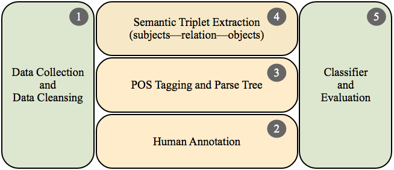

Detecting Emerging Quality-Related Concerns in Defect Reports
Project Description.
Quality-related concerns are often coined with the terms
non-functional requirements, architecturally significant
requirements, and quality attributes. Collectively, these qualities
affect non-behavioral concerns of the software system such as
reliability, usability, security, or maintainability among others.
As a byproduct of a long-term maintenance effort, these system
qualities tend to erode over time, causing system-wide failures that
emerge via quality-related bugs. Quality-related bugs can
have a detrimental impact on system's sustained stability and can
chiefly hinder its core functionality. Typically, for the
developers, to manually examine these high-impacted quality-related
bugs can become prohibitively expensive and impractical task to
attain. This is often a case with bugs that are reported from medium
or large-sized projects such as Eclipse. To alleviate this problem,
we built a quality-based classifier to automatically detect these
emerging quality-related concerns from textual descriptions of bug
report summaries. Specifically, we leveraged a weighted combination
of semantics, lexical, and shallow
features in conjunction with the Random Forest ensemble
learning method. Finally, we discuss the practical applicability of
our classifier for mapping and visualizing quality-related concerns
into the codebase with an example from the Derby project. To
summarize, this work represents an effort and an early awareness to
improve the underlying management of tracking systems and
stakeholder requirements in open-source communities.
